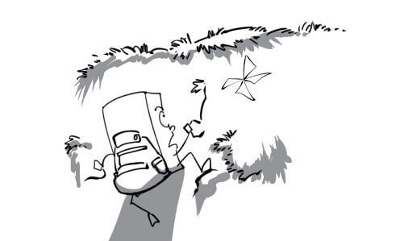
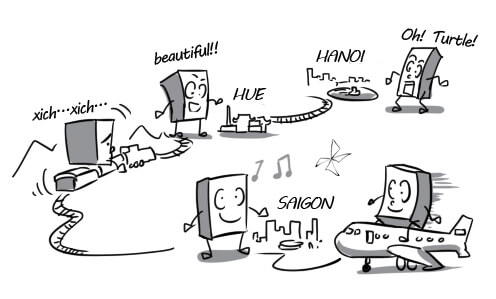
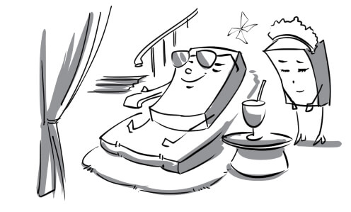
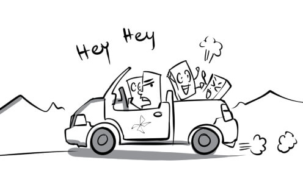
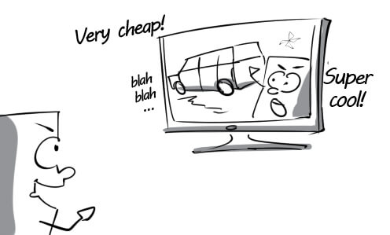
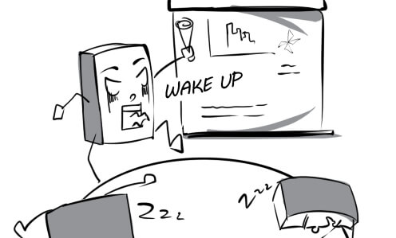
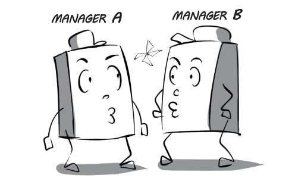

1.
accommodation: Peter chose this hotel as his accommodation on his business trip.
2.
adventurous: The adventurous traveler is climbing a dangerous cliff with no safety rope.

3.
affect: Cold weather in Sapa affects the severity of his flu.

4.
attraction: The travel agent is presenting the attraction of Sapa to his clients.

5.
budget: The tour he wants to book becomes really budget thanks to the shocking discount program.

6.
breathtaking: This adventure tour was such a breathtaking experience for tourists.

7.
coastal: Andrew enjoys going to coastal areas because of their pure atmosphere.

8.
community: Foreign tourists are recording the activities of the Vietnamese community in Mekong Delta.

9.
cosmopolitan: The cosmopolitan is talking about all the countries he has visited.

10.
countryside: My friend lives in a small hut in the countryside.

11.
destination: Paris is an ideal destination for lovers.

12.
diverse: Our tourism products are very diverse. We can satisfy all customer needs.

13.
eco-tourism: Eco-tourism is the most interesting way for us to learn about our ecosystem.

14.
facility: Safety rope is one of the most necessary facilities for rock climbing.
15.
flexible: Our flight options are very flexible. You can book a flight at any time you want.
16.
fluctuate: The gold price fluctuates everyday. It makes people confused.
17.
foreign: When I come to a foreign country, I always want to visit its wonders.

18.
identification: Tourists have to show their identification at check-in before boarding the plane.
19.
inhabitant: Foreign tourists are welcomed warmly by the inhabitants of the village

20.
itinerary: His itinerary from Ho Chi Minh city to Hanoi seems too long and tiring.

21.
journey: Peter was exhausted from his long journey.
22.
landscape: Once you visit Sapa, you will be attracted by its breathtaking landscape.

23.
local: When visiting Ho Chi Minh city, tourists can go shopping at many local markets such as Ben Thanh, Cho Lon...

24.
luggage: Andrew regretted that he carried too much luggage for this trip.

25.
luxurious: Peter stays at a luxurious spa resort on his summer vacation.

26.
mountainous: Exploring the mountainous regions of Vietnam is a wonderful experience.
27.
peaceful: My grandfather and I used to go fishing at this peaceful lake.

28.
peak: Finally, George succeeded in conquering the highest peak in the world.
29.
picturesque: This village is one of the most picturesque fishing villages in the bay.

30.
polluted: The tourist is surprised at how polluted this place is.
31.
quaint: The tourists found the ethnic community's old customs very quaint.
32.
remote: My uncle lives a very modest life in a remote area in Vietnam.
33.
rough: The path from the foot of the mountain to its peak is very rough.

34.
scenic: If we travel by train, we can enjoy the scenic route from Ho Chi Minh city to Hanoi.

35.
stunning: Peter was totally impressed by the stunning view of sunset.

36.
tough: In spite of his age, the old trekker is still tougher than his young fellows.
37.
tourism: River tourism has attracted an increasing number of tourists.

38.
traditional: Tet is the biggest traditional holiday in Vietnam.

39.
travel: I had a chance to visit the Leaning Tower of Pisa when traveling to Italy.
40.
trend: Organizing outdoor activities for employees is a current trend in team building.

41.
trip: I took a road trip to Las Vegas with my friends last year.

42.
unspoiled: Tourists really enjoy their journeys to unspoiled countryside of Vietnam.

43.
urban: Ho Chi Minh city has 19 urban districts and 5 suburban districts.

44.
village: There are still many poor villages in rural areas in Vietnam.
45.
advertise: Peter is tempted to buy the new car advertised on TV.

46.
apply: The boss' son applies for the job by himself because he doesn't want to depend on his father.

47.
boss: Andrew always disappoints his boss because he is so incompetent and lazy.
48.
campaign: A great proportion of the expenses in a presidential campaign are related to media and advertising.
49.
candidate: Andy overcame many candidates to secure this position.

50.
career: I chose information technology as a career although it was quite difficult.

51.
casual: Peter was surprised to find out that he was hired to work just as a casual employee.

52.
clerk: The clerk of our company is very pretty and graceful.
53.
client: The client is asking John about the prices of these new products.
54.
colleague: Andrew coordinates with his colleagues to fulfill his duties.

55.
company: My brother has been working as an intern in this company for 3 months.

56.
competitor: The two competitors try their best to win the speed typing contest.
57.
consumer: The store's wide variety of products makes consumers very confused.

58.
credibility: The new employee succeeded in building credibility at work thanks to his honesty.

59.
customize: The salesman customizes the discount policy to satisfy his clients.
60.
demanding: My boss is so demanding that he is never satisfied with my working performance.

61.
earn: Andy earns about 2,000 dollars a month from working at this cafeteria.

62.
economic: A remarkable increase in gold price is a consequence of the economic crisis.

63.
employ: My company needs to employ two more janitors.
64.
endorse: The safety of this washing-powder is endorsed by renowned experts.
65.
exhausting: The long and exhausting work shift really wore him out.

66.
experience: Thanks to his three-year experience, Justin can work faster and more effectively than his colleagues.

67.
goods: There are still many goods in the warehouse. We have to find a way to sell them.
68.
hospitality: Their hospitality makes the guests very content.

69.
income: The boss earns a great income while his employees have to struggle to have enough money to live.

70.
industry: Vietnam has applied modern technology in manufacturing industries.

71.
interview: I was still nervous during the job interview although I had prepared for it very well.
72.
invest: Mr Thomas decided to use all his money to invest in stocks and shares.

73.
job: There is a wide range of job choices that we can pursue.

74.
laborer: The laborer is cleaning up debris on the construction site.

75.
management: We have just set up some surveillance cameras in the factory to improve our employee performance management.

76.
market: The sale of my company's product in the American market continues to decline.

77.
marketing: The purpose of marketing is to make consumers buy the product you sell.

78.
meeting: The manager was very angry because some of his employees fell asleep during the meeting.

79.
money: Money is the only thing that Peter is dreaming about right now.
80.
monotonous: No one wants to stop by his store because it is so monotonous.
81.
niche: Mr James feels that he has found his niche when he becomes the CEO of this company.
82.
occupation: His prime occupation was construction engineering.

83.
office: The office of Blueway is designed to enhance the productivity of their workers.
84.
overtime: Peter had to do eight hours' overtime this week because he was asked to finish his task as soon as possible.
85.
packaging: This food company only uses colorful packaging to pack their products.
86.
part-time: This student works as a part-time employee at McDonald's every weekend.
87.
pay: Peter felt really happy when he received his first pay.

88.
perk: The company gave Mr Robert a sports car as a perk to show him their appreciation.

89.
persuade: The real estate agent persuades me to buy this house for $100,000.
90.
product: Blueup is introducing English language flashcards - their latest product to consumers.

91.
promote: Mr Thomas was promoted to general manager after a long time of working for this company.
92.
prospect: The CEO confirms that our company's business prospects are really good.
93.
qualification: All of his qualifications meet the requirements of this position.

94.
redundant: The company doesn't need two manager, so they have to make one of them redundant.

95.
request: The workers go on strike to request for a salary increase.

96.
retail: This store retails the new rice cooker for only $30.
97.
retire: Mr Robert leads a leisurely life in Hawaii after retiring.

98.
rewarding: This is a very rewarding book for business. You should read it.